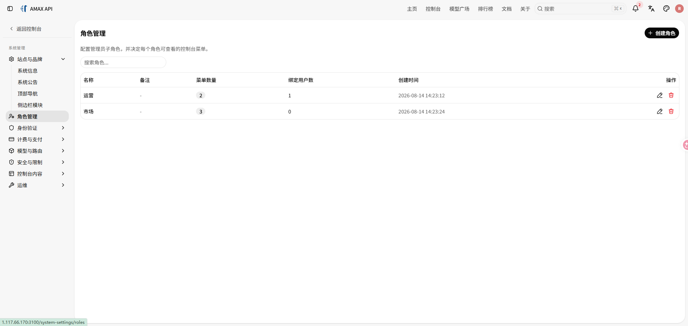
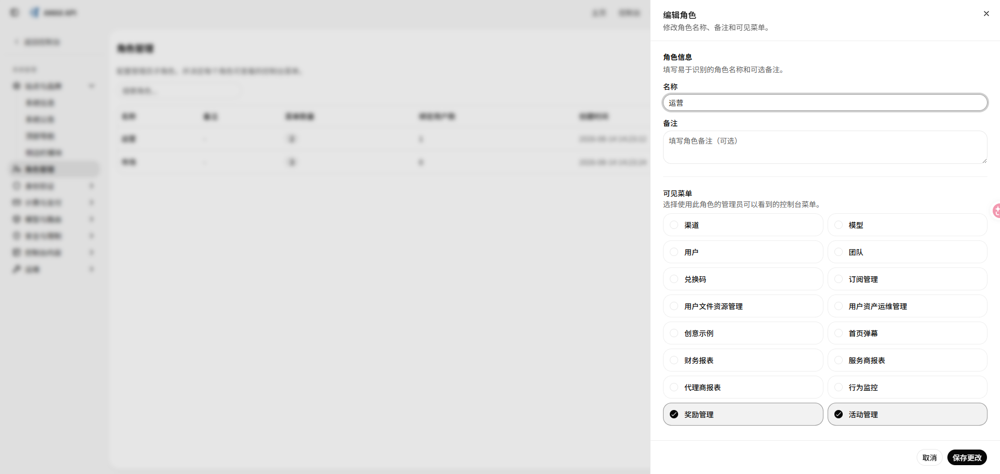
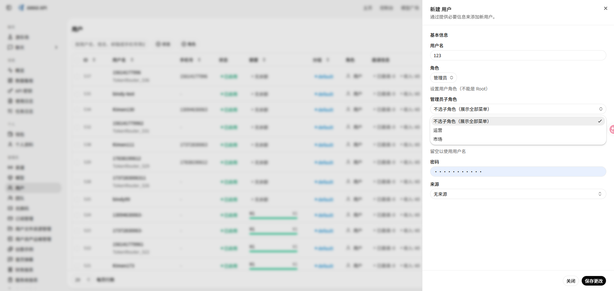

在不破坏原有权限模型的前提下，为 new-api 增加管理员菜单子角色
在 new-api 原有 Root、管理员、普通用户三级身份之上，增加一层由 Root 维护的“管理员菜单子角色”，让不同岗位的管理员只看到职责范围内的后台菜单，同时保持存量管理员默认拥有全部菜单。
目录
一、为什么要做这项功能
随着运营、市场、财务等岗位共同使用管理后台，原有“管理员可以看到全部后台菜单”的方式逐渐暴露出两个问题：
- 岗位无关菜单过多，后台信息密度高，新管理员的学习成本较大。
- 财务报表、渠道、用户、活动等模块全部暴露给所有管理员，不符合最小可见范围原则。
这次改造没有直接引入一套庞大的通用 RBAC，而是围绕当前最明确的诉求，增加“角色—菜单—管理员”三者之间的关系。它解决的是后台菜单可见范围与岗位分工，并不把菜单隐藏冒充资源级或操作级授权。
二、方案概览
Ctrl / ⌘ + 滚轮缩放，放大后可拖动查看
方案坚持三条原则：未绑定子角色的管理员继续看到全部菜单；角色和绑定接口全部经过 Root 鉴权；子角色只能在全局已开启的菜单中继续收窄，不能重新打开被系统关闭的模块。
三、数据、接口与管理界面
1. 数据模型与兼容策略
新增 admin_menu_roles 表保存角色名称、备注和菜单键集合，并在 users 表增加可空的 admin_menu_role_id 索引字段。迁移继续使用 GORM AutoMigrate 和通用字段类型，保持 SQLite、MySQL、PostgreSQL 兼容。
后台维护一份稳定的菜单白名单，目前覆盖渠道、模型、用户、团队、兑换码、订阅、用户资产、财务报表、行为监控、奖励和活动等 16 个管理模块。保存角色时会校验名称和备注长度、拒绝非法菜单键、去重并按固定顺序存储；历史记录中已经下线的未知键会被忽略。
角色列表同时返回菜单数量和绑定用户数量。删除前检查是否仍有管理员引用，避免悬空配置。
2. Root 管理接口与审计
新增 /api/admin/menu-roles 管理接口，支持角色查询、新增、编辑、删除，以及为指定管理员绑定或清空子角色。接口不仅校验角色是否存在，还校验目标用户必须是管理员；用户被降级时同步清理子角色关系。
角色创建、菜单调整、用户绑定和删除均写入管理日志，方便追踪“谁在什么时候修改了哪一组后台菜单”。
3. 角色管理与用户绑定
系统设置中增加 Root 专属角色管理页，提供搜索、创建、编辑、删除、菜单数量和绑定人数展示。

角色编辑抽屉直接呈现可配置菜单；被系统全局关闭的模块不可选，避免产生永远不会生效的角色配置。

管理员既可以在新建用户时选择子角色，也可以在用户列表中单独修改或恢复为“默认全部菜单”。相关文案同步补齐中文、英文、法文、日文、俄文和越南文。

四、三层菜单配置求交
| 配置层 | 作用 | 默认行为 |
|---|---|---|
| 系统全局配置 | 决定平台允许展示哪些模块 | 全局关闭后任何角色都不能打开 |
| 管理员子角色 | 按岗位进一步限制管理菜单 | 未绑定时不收窄 |
| 用户个人配置 | 隐藏本人不常用的入口 | 空配置或旧数据不收窄 |
后端在登录响应和当前用户接口中下发解析后的 admin_menu_keys；前端认证状态保存该字段，再由统一的侧边栏 Hook 完成三层 AND 过滤，避免每个页面维护一套判断。
五、边界、验证与复盘
- 存量兼容：未绑定角色仍是全部菜单，而不是空菜单。
- 安全回退：角色数据解析失败时不授予额外菜单，未知历史键不进入结果。
- 引用保护：仍被用户绑定的角色禁止删除，并返回明确绑定人数。
- 身份联动：只有管理员能绑定子角色，用户升降级时清理失效关系。
- 职责边界：当前版本控制菜单展示；资源级、接口级权限仍由既有 Root/Admin 鉴权负责。
实现补充了数据模型 CRUD、菜单白名单与规范化、引用保护、接口行为和 Root 路由鉴权测试，最终形成“Root 定义岗位角色 → 绑定管理员 → 登录态下发范围 → 前端统一过滤 → 管理操作留痕”的闭环。
难点不在“隐藏几个菜单”，而在于不破坏已经运行的权限与个性化配置。可空关联、三层求交、安全回退和引用保护，让这次高风险改造能够平滑上线。下一步可以把菜单键抽象为统一权限能力，并在服务端扩展查看、编辑、导出等操作级权限。
六、简历可用表述
设计并落地 new-api 管理员菜单子角色功能，新增 Root 专属角色管理与用户绑定流程，通过“全局配置 × 子角色 × 个人配置”三层求交实现 16 个后台模块的岗位化展示，并以可空关联和安全回退保证存量管理员无感升级。
技术关键词：渐进式权限改造、向后兼容、最小权限原则、Root 鉴权、配置求交、安全回退、跨数据库迁移、i18n。